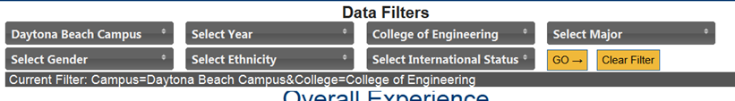

Filters
Often times it is necessary to filter the data to see only certain groups or demographics. The website offers 7 different filters that can be used to narrow down the overall survey data and display just the information you need. The filters are located at the top of the page above the chart, and can be applied to the following demographics:
Campus: Select Campus to create reports based on overall response by campus (Daytona, Prescott, WorldWide).
Year: AY (Academic Year) survey data was collected. Choose one or more years to display data for.
College: Select College to create reports based on overall response within a certain College(s).
Major: Select desired Major(s) to create reports based on overall response within only those Major(s).
Gender, Ethnicity, International Status: additional filters that can be used to customize the data.
The filters each default to include data from all respondent groups. Once desired groups are selected, click on "GO" to have them take effect. A bar will appear just below the filters showing exactly which ones are currently applied. Applied filters will remain intact when downloading the chart. Additionally, the hyperlink in the browser can be copied to other programs and will retain the applied filters. To remove the filters click on "Clear Filter."

Created with the Personal Edition of HelpNDoc: Single source CHM, PDF, DOC and HTML Help creation